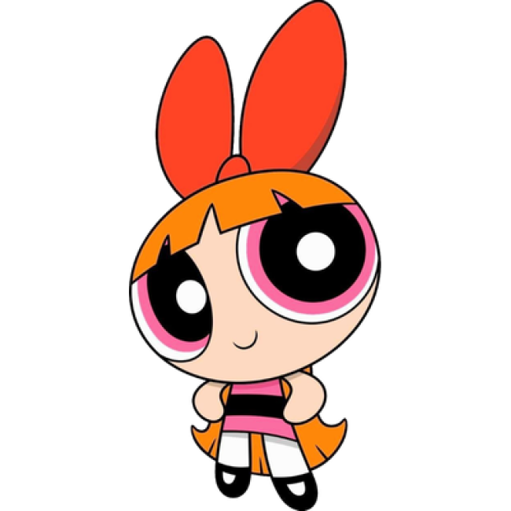

Meninas Superpoderosas
curiosidades
Lindinha
- É a mais doce e sensível das três.
- Adora animais e tem facilidade para se comunicar com eles.
- Apesar de parecer inocente, pode ficar muito poderosa quando está brava.
- Seu brinquedo favorito é o Polvinho, um bichinho de pelúcia.
- É conhecida por ter uma voz bem delicada e gostar de cantar.
Florzinha

- É considerada a líder do trio.
- É muito inteligente e costuma pensar antes de agir.
- Sua característica marcante é o laço vermelho.
- Em algumas histórias, ela demonstra poderes relacionados ao gelo e à respiração congelante.
- É conhecida por ser responsável e tentar manter as irmãs organizadas.
Docinho
- É a mais durona e corajosa das três.
- Adora lutar contra os vilões e não costuma fugir de uma briga.
- Tem uma personalidade mais rebelde e temperamental.
- É a única das três que não usa um acessório no cabelo.
- Apesar de parecer durona, ela também demonstra carinho pelas irmãs.
Feito com ♥ | ♥Aimée ♥